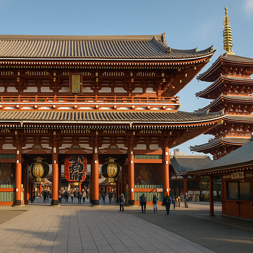

Senso-ji Tempel – Das spirituelle Herz des Asakusa Viertels in Tokio
Der Senso-ji Tempel (浅草寺, Sensō-ji) ist der älteste Tempel Tokios und einer der meistbesuchten spirituellen Orte Japans. Gelegen im historischen Stadtteil Asakusa, ist dieser buddhistische Tempel nicht nur ein bedeutender religiöser Ort, sondern auch ein lebendiges kulturelles Zentrum. Jährlich strömen Millionen von Besuchern aus aller Welt durch seine großen Tore, um ein Stück der alten japanischen Seele zu erleben.
Ein Erbe seit 645 n. Chr.
Der Senso-ji Tempel wurde im Jahr 645 n. Chr. gegründet und ist damit Tokios ältester buddhistischer Tempel. Der Legende nach fanden zwei Brüder beim Fischen eine Statue des Bodhisattva Kannon (Göttin der Barmherzigkeit) im Sumida-Fluss. Trotz aller Versuche, die Statue zurückzugeben, kehrte sie immer wieder. Dieses Wunder inspirierte den Bau eines Tempels zu Ehren von Kannon – so entstand der majestätische Senso-ji.
Auch während der turbulenten feudalen Zeiten Japans und nach der Zerstörung durch Bomben im Zweiten Weltkrieg wurde der Senso-ji stets wiederaufgebaut, was den beständigen Geist Tokios symbolisiert. Die heutige Struktur ist eine Nachkriegsrekonstruktion, sorgfältig restauriert, um die Pracht der Edo-Zeit zu bewahren.
Architektur und heilige Symbole
Ein Spaziergang durch den Senso-ji ist wie der Eintritt in ein lebendiges Museum. Das berühmte Kaminarimon (Donner-Tor) empfängt Besucher mit einer riesigen roten Laterne und Wächterstatuen, die Schutz und Macht symbolisieren. Dahinter erstreckt sich die Nakamise Straße, ein lebendiger Markt mit jahrhundertealten Wurzeln, voller traditioneller Snacks, Kunsthandwerk und lokaler Souvenirs.
Im Herzen des Tempels befindet sich die Haupthalle (Hondō), wo Besucher beten und Weihrauch anzünden, um die Segnungen von Kannon zu empfangen. In der Nähe erhebt sich die Fünfstöckige Pagode elegant in den Himmel – ein Symbol buddhistischer Erleuchtung. Die Reinigungsbrunnen, Loszettel (Omikuji) und Glocken laden zu Reflexion und Verbindung mit der alten Tradition ein.
Kulturelle Veranstaltungen und lokale Feste
Der Senso-ji ist das Zentrum vieler traditioneller Feste. Das bekannteste ist das Sanja Matsuri im Mai, eines der größten und lebhaftesten Shinto-Festivals Tokios, mit tragbaren Schreinen (Mikoshi), Musik und Umzügen durch die belebten Straßen von Asakusa.
Saisonale Events umfassen die Kirschblüte im Frühling, Laternenfeste im Sommer und den Neujahrsbesuch (Hatsumōde), bei dem Millionen Menschen ihre Wünsche für das kommende Jahr formulieren. Diese Feierlichkeiten machen den Senso-ji das ganze Jahr über zu einem lebendigen kulturellen Zentrum.
Warum den Senso-ji Tempel besuchen?
- 🌸 Der meistbesuchte Tempel Tokios mit über 30 Millionen Besuchern jährlich
- 🌸 Perfekte Kombination aus spiritueller Ruhe und lebendiger Straßenkultur
- 🌸 Reich an fotogenen Orten: rote Tore, Laternen und traditionelle Architektur
- 🌸 Leicht erreichbar von der Station Asakusa über mehrere U-Bahn-Linien
- 🌸 Kostenlos zugänglich und rund um die Uhr geöffnet
Anreise zum Senso-ji Tempel
🌸 Adresse: 2-3-1 Asakusa, Taito City, Tokio 111-0032, Japan
🌸 Anreise: 1 Minute zu Fuß von der Station Asakusa (Ginza-Linie, Asakusa-Linie, Tobu-Linie, Tsukuba Express)
🌸 Öffnungszeiten: Der Tempel ist rund um die Uhr geöffnet; Haupthalle von 6:00 bis 17:00
Mehr entdecken: Tokyos spirituelle Schätze
Der Senso-ji Tempel ist nicht nur ein Ort zum Anschauen – er ist ein Ort zum Erleben. Ob Sie kulturelle Entdeckungen, spirituelle Verbindung oder historische Einblicke suchen, dieser Ort bietet ein authentisches Japan-Erlebnis. In Ihrer Tokio-Reiseroute lässt er sich perfekt mit nahegelegenen Attraktionen kombinieren, wie dem Sumida-Flusspark, dem Tokyo Skytree und den retro Einkaufsstraßen von Ueno.
Tags: Senso-ji Tempel, Asakusa Tokio, buddhistische Tempel Tokio, historische Sehenswürdigkeiten Japan, kulturelle Attraktionen Tokio, Sehenswürdigkeiten Tokio, Asakusa Reiseführer, Kannon Göttin, Nakamise Straße, Sanja Matsuri
Planen Sie Ihren Besuch beim Senso-ji Tempel?
Für ein intensiveres und bereicherndes Erlebnis empfehlen wir, einen zertifizierten privaten Guide unseres Teams zu buchen. Alle unsere Guides sind offiziell vom japanischen Staat anerkannt und bieten individuell angepasste Touren nach Ihren Interessen an. Kontaktieren Sie Ihren gewählten Guide im Voraus, um die Verfügbarkeit zu prüfen und professionelle Unterstützung für Ihre Reise zu erhalten.